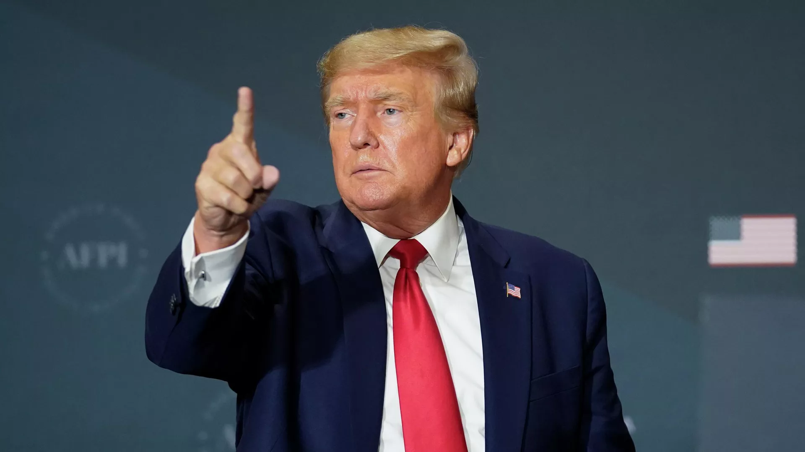

Media: Trump may be "unbanned" on Facebook* and Instagram* before the end of the month
FT: Meta* may give Trump back access to Facebook* and Instagram* accounts

"Meta* prepares to make controversial decision to bring Trump back to Facebook*," -the article reads.
The company's management thought about unblocking Trump's Facebook* and Instagram* accounts back in November, after the restoration of the former American president's blog on Twitter, Kommersant adds.
Meta* originally planned to return control of Trump's personal pages in early January, but the process is being delayed due to the ambiguity of such a decision, the FT notes.
The publication names a new period during which a decision on accounts will be made - until the end of this month.
Donald Trump's Twitter and Meta* accounts were suspended in early 2021.
Earlier, Sputnik radio told why Donald Trump harshly criticized the US political system.
* The activity of Meta (social networks Facebook and Instagram) is banned in Russia as extremist.